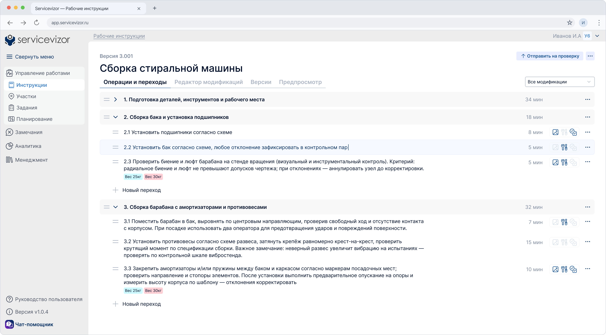
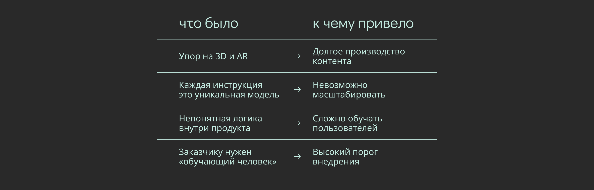
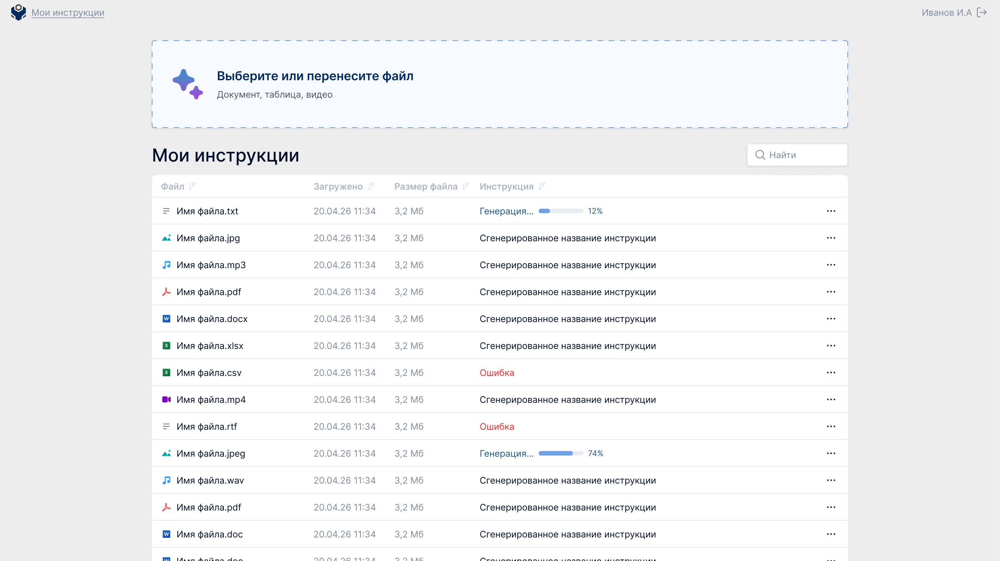
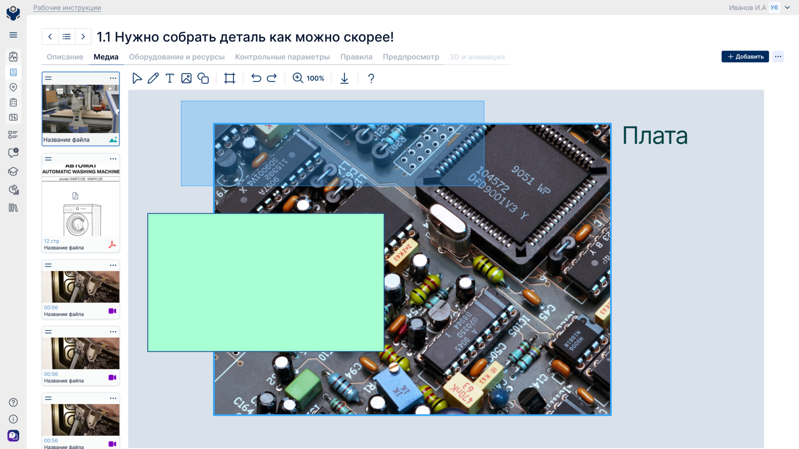
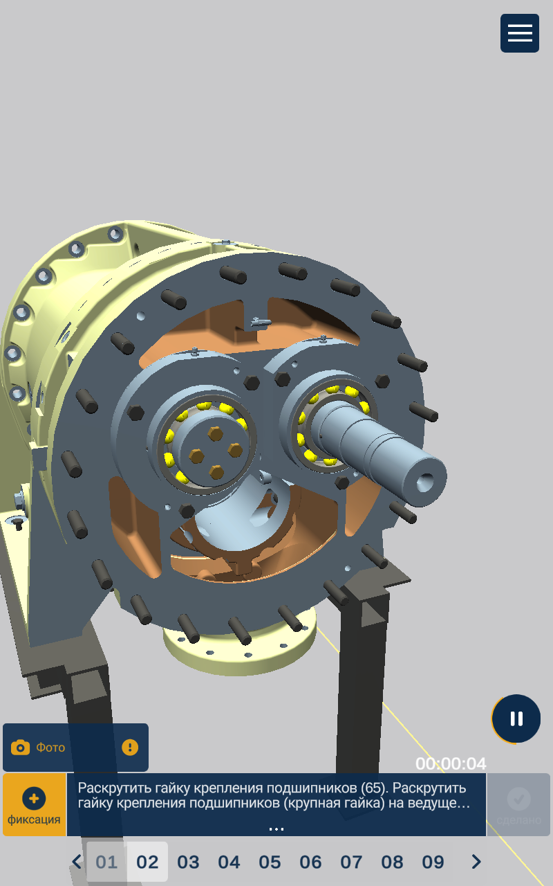
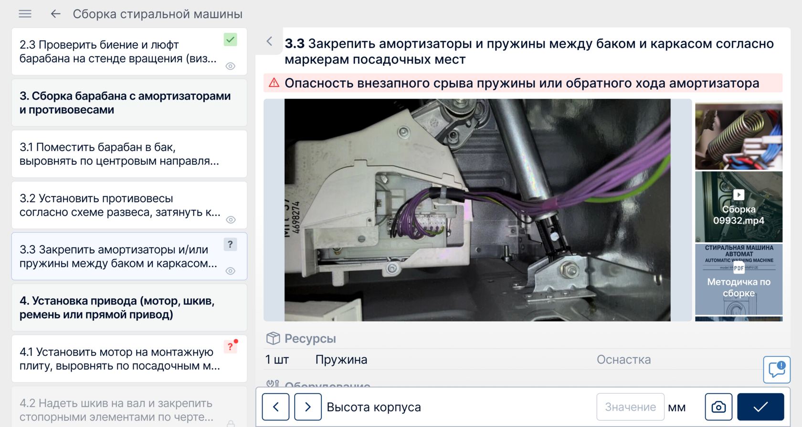

ServiceVizor: product relaunch and strategy shift
How a scalable work instruction system led to the first long-term contracts.
About the project

About the product
ServiceVizor connects office planning with work on the shop floor.
In the web service, technical specialists create work instructions, assign tasks, and track progress. In the app, operators complete tasks, answer check questions, and record issues as they work.
My role
I joined when the first version needed a complete rethink. For two years, I was the sole designer and took part in key product decisions.
I helped conduct interviews, analyze competitors, and choose the target audience. I designed instruction and task flows, refreshed the visual identity, and helped prepare a guide for customers with demo access.
Context
The first version emphasized 3D and AR, with detailed visualizations of production operations. Creating a few models took months, while covering actual processes would require hundreds. The first customer did not renew its contract.



Research and new focus
Before redesigning, we needed to understand what customers wanted to accomplish, what they would pay for, and what prevented adoption.
Research approach
Our initial sample was limited: the first customer, which had declined to renew, and several factories interested during consultations. Interviews included a product demonstration. I helped conduct and analyze them, studied competing products, and reviewed feedback from demo users.
Managers approve purchases, while operators use the system daily. We gained access to end users only after acquiring our first new committed customer, and accounted for that limitation in our conclusions.
Audience
Factories differed in process maturity and use of digital tools. Companies that had already begun digitizing their operations were the most ready to adopt the product.

Key findings
Managers need planning and oversight; operators need speed and simplicity. Entering instructions manually from scratch is burdensome. Experienced shop-floor workers do not need detailed 3D models for recurring operations, and producing those models cannot scale to hundreds of processes.
The new version needed a reusable structure, fast deployment, and a predictable interface.
MVP solutions
Two modules connect the knowledge base with actual shop-floor work.
Work instructions
We built a tool that uses AI to convert existing instructions and speed up deployment. Users can edit the result, change text, and add photos, documents, and videos.


Task management
Supervisors assign tasks based on prepared instructions. The main screen shows key task details and a completion report tailored to its status.

Operator tablet
We redesigned the main screen for completing a work instruction step on a tablet.


Further development
After the MVP, we added a Gantt chart and planning analytics. That part of the product is covered in a separate case study ↗.


Outcome
After the relaunch, customers began using the product in real production workflows. The customer journey was a presentation and consultation, one to three months of demo access, then a license agreement.
clients
signed long-term license agreements while the product was still in active development.
factories
used the product in demo mode to test adoption flows.
prospective clients
were negotiating long-term contracts.